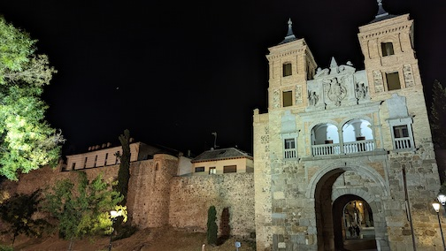
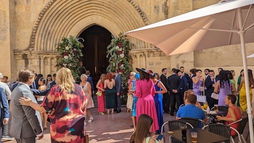
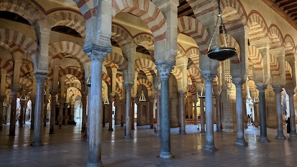
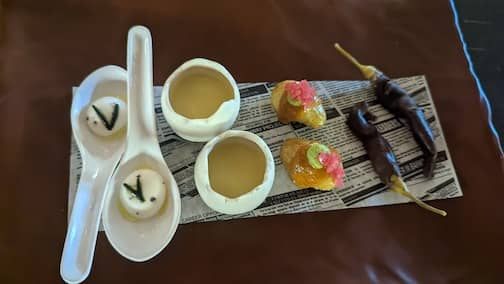
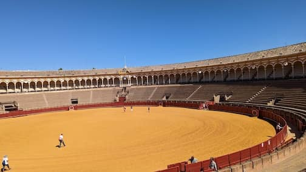
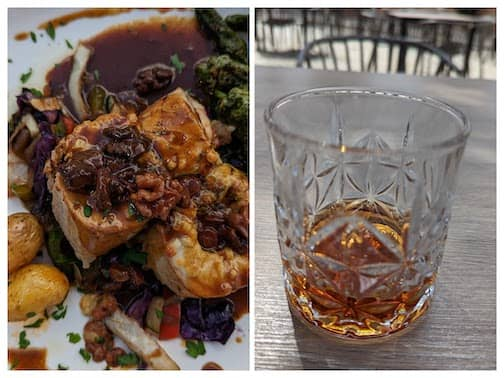
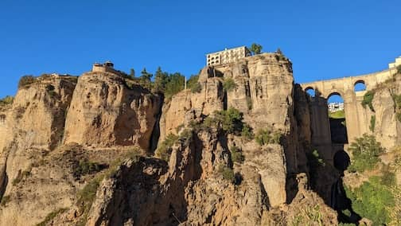
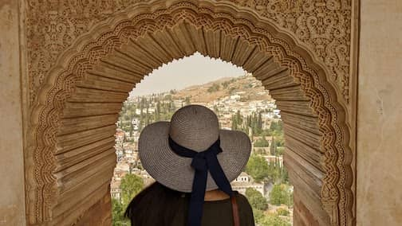

..
Spain
Sep 21 - Oct 6. Spain.
A fun 16 day adventure in Southern Spain. We flew to Madrid, and stayed at Toledo, Cordoba, Seville, Ronda, Granada, Madrid.
Stopped by Arcos de la Frontera, Jerez de la Frontera, Marbella, Malaga.
Weather was perfect. Amazing food. So much history and majestic sights.
I am a lucky woman.
 A night stroll around old town Toledo
 Happened upon a church wedding in Cordoba. So colorful
 Mosque-Cathedral in Cordoba
 Our favorite meal in Cordoba. Vegetarian tasting menu
 Plaza de Toros, Seville. We both felt a strong energy in the bull ring
 Lovely lunch and sherry in Jerez de la Frontera
 Loved Ronda. Small hilltop town and so unique
 We both did not know Alhambra was not just 1 palace